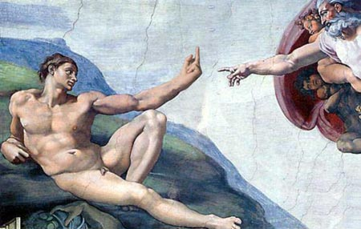

|
|
|
|
|
|
|
|
|
|
|
|
|
|
|||
|
|
|||||
|
|
|
|
|
|
|
|
|
|
|
|||
|
|
|||||
|
|
|
|
|

The atheist
Evolutionary biologist Richard Dawkins explains why God is a delusion, religion is a virus, and America has slipped back into the Dark Ages....- - - - - - - - - - - -
By Gordy SlackApril 28, 2005 | Richard Dawkins is the world's most famous out-of-the-closet living atheist. He is also the world's most controversial evolutionary biologist. Publication of his 1976 book, "The Selfish Gene," thrust Dawkins into the limelight as the handsome, irascible, human face of scientific reductionism. The book provoked everything from outrage to glee by arguing that natural selection worked its creative powers only through genes, not species or individuals. Humans are merely "gene survival machines," he asserted in the book.
Dawkins stuck to his theme but expanded his territory in such subsequent books as "The Blind Watchmaker," "Unweaving the Rainbow" and "Climbing Mount Improbable." His recent work, "The Ancestor's Tale," traces human lineage back through time, stopping to ponder important forks in the evolutionary road.
Given his outspoken defense of Darwin, and natural selection as the force of life, Dawkins has assumed a new role: the religious right's Public Enemy No. 1. Yet Dawkins doesn't shy from controversy, nor does he suffer fools gladly. He recently met a minister who was on the opposite side of a British political debate. When the minister put out his hand, Dawkins kept his hands at his side and said, "You, sir, are an ignorant bigot."
Currently, Dawkins is the Charles Simonyi Professor of the Public Understanding of Science at Oxford University, a position created for him in 1995 by Charles Simonyi, a Microsoft millionaire. Earlier this year, Dawkins signed an agreement with British television to make a documentary about the destructive role of religion in modern history, tentatively titled "The Root of All Evil."
I met Dawkins in late March at the Atheist Alliance International annual conference in Los Angeles, where he presented the alliance's top honor, the Richard Dawkins Prize, to magicians Penn and Teller. During our conversation in my hotel room, Dawkins was as gracious as he was punctiliously dressed in a crisp white shirt and soft blazer.
Once again, evolution is under attack. Are there any questions at all about its validity?
It's often said that because evolution happened in the past, and we didn't see it happen, there is no direct evidence for it. That, of course, is nonsense. It's rather like a detective coming on the scene of a crime, obviously after the crime has been committed, and working out what must have happened by looking at the clues that remain. In the story of evolution, the clues are a billionfold.
There are clues from the distribution of DNA codes throughout the animal and plant kingdoms, of protein sequences, of morphological characters that have been analyzed in great detail. Everything fits with the idea that we have here a simple branching tree. The distribution of species on islands and continents throughout the world is exactly what you'd expect if evolution was a fact. The distribution of fossils in space and in time are exactly what you would expect if evolution were a fact. There are millions of facts all pointing in the same direction and no facts pointing in the wrong direction.
British scientist J.B.S. Haldane, when asked what would constitute evidence against evolution, famously said, "Fossil rabbits in the Precambrian." They've never been found. Nothing like that has ever been found. Evolution could be disproved by such facts. But all the fossils that have been found are in the right place. Of course there are plenty of gaps in the fossil record. There's nothing wrong with that. Why shouldn't there be? We're lucky to have fossils at all. But no fossils have been found in the wrong place, such as to disprove the fact of evolution. Evolution is a fact.
Still, so many people resist believing in evolution. Where does the resistance come from?
It comes, I'm sorry to say, from religion. And from bad religion. You won't find any opposition to the idea of evolution among sophisticated, educated theologians. It comes from an exceedingly retarded, primitive version of religion, which unfortunately is at present undergoing an epidemic in the United States. Not in Europe, not in Britain, but in the United States.
My American friends tell me that you are slipping towards a theocratic Dark Age. Which is very disagreeable for the very large number of educated, intelligent and right-thinking people in America. Unfortunately, at present, it's slightly outnumbered by the ignorant, uneducated people who voted Bush in.
But the broad direction of history is toward enlightenment, and so I think that what America is going through at the moment will prove to be a temporary reverse. I think there is great hope for the future. My advice would be, Don't despair, these things pass.
You delve into agnosticism in "The Ancestor's Tale." How does it differ from atheism?
It's said that the only rational stance is agnosticism because you can neither prove nor disprove the existence of the supernatural creator. I find that a weak position. It is true that you can't disprove anything but you can put a probability value on it. There's an infinite number of things that you can't disprove: unicorns, werewolves, and teapots in orbit around Mars. But we don't pay any heed to them unless there is some positive reason to think that they do exist.
Believing in God is like believing in a teapot orbiting Mars?
Yes. For a long time it seemed clear to just about everybody that the beauty and elegance of the world seemed to be prima facie evidence for a divine creator. But the philosopher David Hume already realized three centuries ago that this was a bad argument. It leads to an infinite regression. You can't statistically explain improbable things like living creatures by saying that they must have been designed because you're still left to explain the designer, who must be, if anything, an even more statistically improbable and elegant thing. Design can never be an ultimate explanation for anything. It can only be a proximate explanation. A plane or a car is explained by a designer but that's because the designer himself, the engineer, is explained by natural selection.
Those who embrace "intelligent design" -- the idea that living cells are too complex to have been created by nature alone -- say evolution isn't incompatible with the existence of God.
There is just no evidence for the existence of God. Evolution by natural selection is a process that works up from simple beginnings, and simple beginnings are easy to explain. The engineer or any other living thing is difficult to explain -- but it is explicable by evolution by natural selection. So the relevance of evolutionary biology to atheism is that evolutionary biology gives us the only known mechanism whereby the illusion of design, or apparent design, could ever come into the universe anywhere.
So why do we insist on believing in God?
From a biological point of view, there are lots of different theories about why we have this extraordinary predisposition to believe in supernatural things. One suggestion is that the child mind is, for very good Darwinian reasons, susceptible to infection the same way a computer is. In order to be useful, a computer has to be programmable, to obey whatever it's told to do. That automatically makes it vulnerable to computer viruses, which are programs that say, "Spread me, copy me, pass me on." Once a viral program gets started, there is nothing to stop it.
Similarly, the child brain is preprogrammed by natural selection to obey and believe what parents and other adults tell it. In general, it's a good thing that child brains should be susceptible to being taught what to do and what to believe by adults. But this necessarily carries the down side that bad ideas, useless ideas, waste of time ideas like rain dances and other religious customs, will also be passed down the generations. The child brain is very susceptible to this kind of infection. And it also spreads sideways by cross infection when a charismatic preacher goes around infecting new minds that were previously uninfected.
You've said that raising children in a religious tradition may even be a form of abuse.
What I think may be abuse is labeling children with religious labels like Catholic child and Muslim child. I find it very odd that in our civilization we're quite happy to speak of a Catholic child that is 4 years old or a Muslim of child that is 4, when these children are much too young to know what they think about the cosmos, life and morality. We wouldn't dream of speaking of a Keynesian child or a Marxist child. And yet, for some reason we make a privileged exception of religion. And, by the way, I think it would also be abuse to talk about an atheist child.
You are working on a new book tentatively called "The God Delusion." Can you explain it?
A delusion is something that people believe in despite a total lack of evidence. Religion is scarcely distinguishable from childhood delusions like the "imaginary friend" and the bogeyman under the bed. Unfortunately, the God delusion possesses adults, and not just a minority of unfortunates in an asylum. The word "delusion" also carries negative connotations, and religion has plenty of those.
What are its negative connotations?
A delusion that encourages belief where there is no evidence is asking for trouble. Disagreements between incompatible beliefs cannot be settled by reasoned argument because reasoned argument is drummed out of those trained in religion from the cradle. Instead, disagreements are settled by other means which, in extreme cases, inevitably become violent. Scientists disagree among themselves but they never fight over their disagreements. They argue about evidence or go out and seek new evidence. Much the same is true of philosophers, historians and literary critics.
But you don't do that if you just know your holy book is the God-written truth and the other guy knows that his incompatible scripture is too. People brought up to believe in faith and private revelation cannot be persuaded by evidence to change their minds. No wonder religious zealots throughout history have resorted to torture and execution, to crusades and jihads, to holy wars and purges and pogroms, to the Inquisition and the burning of witches.
What are the dark sides of religion today?
Terrorism in the Middle East, militant Zionism, 9/11, the Northern Ireland "troubles," genocide, which turns out to be "credicide" in Yugoslavia, the subversion of American science education, oppression of women in Saudi Arabia, Afghanistan, and the Roman Catholic Church, which thinks you can't be a valid priest without testicles.
Fifty years ago, philosophers like Bertrand Russell felt that the religious worldview would fade as science and reason emerged. Why hasn't it?
That trend toward enlightenment has indeed continued in Europe and Britain. It just has not continued in the U.S., and not in the Islamic world. We're seeing a rather unholy alliance between the burgeoning theocracy in the U.S. and its allies, the theocrats in the Islamic world. They are fighting the same battle: Christian on one side, Muslim on the other. The very large numbers of people in the United States and in Europe who don't subscribe to that worldview are caught in the middle.
Actually, holy alliance would be a better phrase. Bush and bin Laden are really on the same side: the side of faith and violence against the side of reason and discussion. Both have implacable faith that they are right and the other is evil. Each believes that when he dies he is going to heaven. Each believes that if he could kill the other, his path to paradise in the next world would be even swifter. The delusional "next world" is welcome to both of them. This world would be a much better place without either of them.
Does religion contribute to the violence of Islamic extremists? Christian extremists?
Of course it does. From the cradle, they are brought up to revere martyrs and to believe they have a fast track to heaven. With their mother's milk they imbibe hatred of heretics, apostates and followers of rival faiths.
I don't wish to suggest it is doctrinal disputes that are motivating the individual soldiers who are doing the killing. What I do suggest is that in places like Northern Ireland, religion was the only available label by which people could indulge in the human weakness for us-or-them wars. When a Protestant murders a Catholic or a Catholic murders a Protestant, they're not playing out doctrinal disagreements about transubstantiation.
What is going on is more like a vendetta. It was one of their lot's grandfathers who killed one of our lot's grandfathers, and so we're getting our revenge. The "their lot" and "our lot" is only defined by religion. In other parts of the world it might be defined by color, or by language, but in so many parts of the world it isn't, it's defined by religion. That's true of the conflicts among Croats and the Serbs and Bosnians -- that's all about religion as labels.
The grotesque massacres in India at the time of partition were between Hindus and Muslims. There was nothing else to distinguish them, they were racially the same. They only identified themselves as "us" and the others as "them" by the fact that some of them were Hindus and some of them were Muslims. That's what the Kashmir dispute is all about. So, yes, I would defend the view that religion is an extremely potent label for hostility. That has always been true and it continues to be true to this day.
How would we be better off without religion?
We'd all be freed to concentrate on the only life we are ever going to have. We'd be free to exult in the privilege -- the remarkable good fortune -- that each one of us enjoys through having been being born. An astronomically overwhelming majority of the people who could be born never will be. You are one of the tiny minority whose number came up. Be thankful that you have a life, and forsake your vain and presumptuous desire for a second one. The world would be a better place if we all had this positive attitude to life. It would also be a better place if morality was all about doing good to others and refraining from hurting them, rather than religion's morbid obsession with private sin and the evils of sexual enjoyment.
Are there environmental costs of a religious worldview?
There are many religious points of view where the conservation of the world is just as important as it is to scientists. But there are certain religious points of view where it is not. In those apocalyptic religions, people actually believe that because they read some dopey prophesy in the book of Revelation, the world is going to come to an end some time soon. People who believe that say, "We don't need to bother about conserving forests or anything else because the end of the world is coming anyway." A few decades ago one would simply have laughed at that. Today you can't laugh. These people are in power.
Unlike other accounts of the evolution of life, "The Ancestor's Tale" starts at the present and works back. Why did you decide to tell the story in reverse?
The most important reason is that if you tell the evolution story forwards and end up with humans, as it's humanly normal to do so because people are interested in themselves, it makes it look as though the whole of evolution were somehow aimed at humanity, which of course it wasn't. One could aim anywhere, like at kangaroos, butterflies or frogs. We're all contemporary culmination points, for the moment, in evolution.
If you go backward, however, no matter where you start in this huge tree of life, you always converge at the same point, which is the origin of life. So that was the main reason for structuring the book the way I did. It gave me a natural goal to head toward -- the origin of life -- no matter where I started from. Then I could legitimately start with humans, which people are interested in.
People like to trace their ancestry. One of the most common types of Web sites, after ones about sex, is one's family history. When people trace the ancestry of that name, they normally stop at a few hundred years. I wanted to go back 4,000 million years.
The idea of going back towards a particular goal called to my mind the notion of pilgrimage as a kind of literary device. So I very vaguely modeled the book on Chaucer's "Canterbury Tales," where the pilgrims start off as a band of human pilgrims walking backward to discover our ancestors. We are successively joined by other pilgrims -- the chimpanzee pilgrims at 5 million years, then the gorilla pilgrims, then the orangutan pilgrims. Starting with humans, there are only about 39 such rendezvous points as you go back in time. It's a rather surprising fact. Rendezvous 39 is where we meet the bacteria pilgrims.
The idea that evolution could be "random" seems to frighten people. Is it random?
This is a spectacular misunderstanding. If it was random, then of course it couldn't possibly have given rise to the fantastically complicated and elegant forms that we see. Natural selection is the important force that drives evolution. Natural selection is about as non-random a force as you could possibly imagine. It can't work unless there is some sort of variation upon which to work. And the source of variation is mutation. Mutation is random only in the sense that it is not directed specifically toward improvement. It is natural selection that directs evolution toward improvement. Mutation is random in that it's not directed toward improvement.
The idea that evolution itself is a random process is a most extraordinary travesty. I wonder if it's deliberately put about maliciously or whether these people honestly believe such a preposterous absurdity. Of course evolution isn't random. It is driven by natural selection, which is a highly non-random force.
Is there an emotional side to the intellectual enterprise of exploring the story of life on Earth?
Yes, I strongly feel that. When you meet a scientist who calls himself or herself religious, you'll often find that that's what they mean. You often find that by "religious" they do not mean anything supernatural. They mean precisely the kind of emotional response to the natural world that you've described. Einstein had it very strongly. Unfortunately, he used the word "God" to describe it, which has led to a great deal of misunderstanding. But Einstein had that feeling, I have that feeling, you'll find it in the writings of many scientists. It's a kind of quasi-religious feeling. And there are those who wish to call it religious and who therefore are annoyed when a scientist calls himself an atheist. They think, "No, you believe in this transcendental feeling, you can't be an atheist." That's a confusion of language.
Some scientists say that removing religion or God from their life would leave it meaningless, that it's God that gives meaning to life.
"Unweaving the Rainbow" specifically attacks the idea that a materialist, mechanist, naturalistic worldview makes life seem meaningless. Quite the contrary, the scientific worldview is a poetic worldview, it is almost a transcendental worldview. We are amazingly privileged to be born at all and to be granted a few decades -- before we die forever -- in which we can understand, appreciate and enjoy the universe. And those of us fortunate enough to be living today are even more privileged than those of earlier times. We have the benefit of those earlier centuries of scientific exploration. Through no talent of our own, we have the privilege of knowing far more than past centuries. Aristotle would be blown away by what any schoolchild could tell him today. That's the kind of privileged century in which we live. That's what gives my life meaning. And the fact that my life is finite, and that it's the only life I've got, makes me all the more eager to get up each morning and set about the business of understanding more about the world into which I am so privileged to have been born.
Humans may not be products of an intelligent designer but given genetic technologies, our descendants will be. What does this mean about the future of evolution?
It's an interesting thought that in some remote time in the future, people may look back on the 20th and 21st centuries as a watershed in evolution -- the time when evolution stopped being an undirected force and became a design force. Already, for the past few centuries, maybe even millennia, agriculturalists have in a sense designed the evolution of domestic animals like pigs and cows and chickens. That's increasing and we're getting more technologically clever at that by manipulating not just the selection part of evolution but also the mutation part. That will be very different; one of the great features of biological evolution up to now is that there is no foresight.
In general, evolution is a blind process. That's why I called my book "The Blind Watchmaker." Evolution never looks to the future. It never governs what happens now on the basis on what will happen in the future in the way that human design undoubtedly does. But now it is possible to breed a new kind of pig, or chicken, which has such and such qualities. We may even have to pass that pig through a stage where it is actually less good at whatever we want to produce -- making long bacon racks or something -- but we can persist because we know it'll be worth it in the long run. That never happened in natural evolution; there was never a "let's temporarily get worse in order to get better, let's go down into the valley in order to get over to the other side and up onto the opposite mountain." So yes, I think it well may be that we're living in a time when evolution is suddenly starting to become intelligently designed.
Source: http://www.salon.com/news/feature/2005/04/30/dawkins/index.html
Note: We are making such material available in our efforts to advance understanding of scientific, environmental, political, human rights, economic, democracy, freethinking, and social justice issues, etc. We believe this constitutes a 'fair use' of any such copyrighted material as provided for in section 107 of the US Copyright Law. In accordance with Title 17 U.S.C. Section 107, the material on this site is distributed without profit to those who have expressed a prior interest in receiving the included information for research and educational purposes. For more information, please refer to : http://www.law.cornell.edu/uscode/17/107.shtml. If you wish to use copyrighted material from this site for purposes of your own that go beyond 'fair use', you must obtain permission from the copyright owner.